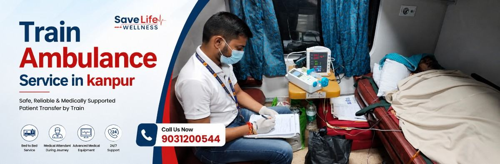

When a patient needs to travel hundreds or even thousands of kilometres, choosing the right mode of transportation becomes an important medical decision. A long journey can be challenging for patients who need oxygen therapy, continuous monitoring, mobility assistance, or other medical support. Save Life Wellness provides train ambulance service in Kanpur for families who need coordinated, medically supported patient transportation to cities across India.
Instead of arranging every part of the journey separately, our team can coordinate the patient transfer from the pickup location to the railway station, provide medical assistance during the train journey, and arrange road ambulance support at the destination. Therefore, the entire transfer can be planned around the patient's clinical condition and transportation requirements.
Whether the patient needs supplemental oxygen, monitoring, suction support, or assistance with mobility, the required arrangements can be discussed before travel. However, the suitability of rail transportation depends on the patient's condition, urgency, and medical requirements.
Sometimes, the treatment a patient needs is available in another city. In other cases, the family may want to shift the patient closer to home after discharge. Whatever the reason, moving a patient over a long distance requires more planning than simply booking a train ticket.
A train ambulance may be considered for selected patients who require medical assistance during a long distance journey. For example, families may enquire about patient transportation when:
More importantly, the transportation plan should match the patient's medical condition. A doctor or treating medical team should be consulted when there is uncertainty about whether rail transportation is appropriate.
A train ambulance is a medically supported patient transfer by rail. Instead of travelling as a regular passenger, the patient travels with planned medical assistance and transportation equipment according to their clinical requirements.
At Save Life Wellness, the journey can be coordinated as a complete transfer:
Hospital or Home → Road Ambulance → Railway Station → Train Journey → Destination Station → Road Ambulance → Receiving Hospital or Home
This approach is particularly useful for families arranging long distance patient transportation because several stages of the journey need to work together. As a result, the family does not have to manage every transfer independently.
The exact medical support depends on the patient's condition. Patients requiring oxygen therapy, monitoring, suction, infusion support, or other assistance should have their requirements discussed before the journey.
A medically supported patient transfer begins before the patient reaches the railway station. Our team first understands the patient's condition and then works through the transportation requirements.
Start by sharing the essential information about the patient, including:
This information helps the team understand what type of transportation support may be required.
The patient's transportation requirements are reviewed before the journey is planned. Factors such as oxygen dependency, mobility, monitoring requirements, and the need for medical equipment can influence the arrangements.
For patients with complex medical needs, the treating physician's advice should also be considered. This is especially important when the patient has unstable vital signs or requires intensive clinical intervention.
Once the requirements are understood, the journey can be coordinated around train availability, destination, patient needs, and other practical considerations.
The goal is simple: make every stage of the journey easier for the patient and family.
A road ambulance can be arranged to transport the patient from the hospital, home, or another suitable pickup point to the railway station.
Because patient handling can be difficult, appropriate transfer techniques and stretcher support may be required for patients with limited mobility.
A trained medical attendant or paramedic can accompany the patient according to the transportation requirements.
During the journey, the patient may require observation of vital parameters such as oxygen saturation, pulse rate, respiratory status, and blood pressure. If clinically indicated, the appropriate monitoring and medical equipment can be arranged.
Reaching the destination railway station is not necessarily the end of the transfer.
A destination road ambulance can be arranged to move the patient from the station to the receiving hospital, home, or another designated location. Therefore, the journey can continue beyond the railway platform until the patient reaches the planned destination.
Medical equipment should never be selected simply because it sounds advanced. Instead, equipment should be matched to the patient's clinical requirements and the level of support needed during transportation.
Patients who require supplemental oxygen may need oxygen therapy throughout the journey. The oxygen requirement should be discussed before travel so that an appropriate supply can be planned.
Depending on the patient's condition, monitoring equipment may be arranged to observe vital parameters during transportation.
For example, monitoring may include:
Continuous monitoring can be particularly important for patients whose clinical condition requires closer observation.
Patients with impaired airway clearance or certain respiratory conditions may require suction support. Appropriate suction equipment can be arranged when clinically required.
Some patients may require intravenous fluids, prescribed medications, or infusion support during transportation. The medical team can assess the patient's requirements before the journey.
Patients requiring a higher level of medical support need careful assessment before rail transportation.
Depending on the patient's clinical condition, arrangements may include advanced monitoring, oxygen support, airway management equipment, or other medical resources. However, not every patient requiring intensive care is automatically suitable for train transportation.
The treating physician and medical transportation team should assess the patient's stability before the journey.
A train ambulance can be considered for selected patients who need medically supported long distance transportation.
This may include:
However, the patient's diagnosis alone does not determine whether rail transportation is appropriate. The current clinical condition, stability, oxygen requirement, mobility, urgency, and required level of medical care should also be considered.
If you are unsure, speak with the patient's treating doctor before making travel arrangements.
Kanpur's location and railway connectivity make it possible to plan patient transfers toward several major cities. Depending on train availability and the patient's requirements, Save Life Wellness can help families explore long distance rail transportation options from Kanpur.
The actual route, train, timing, and travel arrangements depend on availability and the patient's transportation requirements.
Looking for a specific route? Contact our team with the pickup location, destination, and patient's medical condition.
For families, the most difficult part of a long distance transfer is often not the train journey itself. It is everything that happens before and after the train.
A coordinated bed to bed transfer can address these transportation stages.
Pickup Location → Road Ambulance → Railway Station → Train Transfer → Destination Station → Road Ambulance → Receiving Hospital or Home
As a result, families can plan the complete journey instead of arranging isolated transportation services.
Choosing patient transportation is different from choosing an ordinary travel service. The patient's medical condition must remain at the centre of the planning process.
A trained medical professional can accompany the patient based on their transportation and clinical requirements.
Road ambulance support can be coordinated at the pickup and destination points. Therefore, the patient's journey does not have to stop at the railway station.
Save Life Wellness supports patient transportation between Kanpur and destinations across India, subject to route availability and medical suitability.
Medical equipment can be arranged according to the patient's condition and transportation needs.
The team can explain the transportation process and help the family understand what information and arrangements may be required.
Instead of managing multiple transportation providers separately, families can coordinate the different stages of the patient transfer through one service provider.
There is no single transportation option that works for every patient. Instead, the right choice depends on the patient's condition, travel distance, urgency, medical requirements, and available options.
| Factor | Train Ambulance | Road Ambulance | Air Ambulance |
|---|---|---|---|
| Long distance travel | Suitable for selected patients | Can become demanding over very long distances | Very fast |
| Cost | Often more economical than air transfer | Depends on distance and requirements | Generally higher |
| Medical support | Can be arranged according to requirements | Medical support can be arranged | Advanced medical support can be arranged |
| Journey duration | Usually longer | Depends on road conditions | Usually shortest |
| Common use | Planned long distance transfers | Short and intercity transfers | Time sensitive transfers |
Therefore, the cheapest or fastest option is not automatically the best option. The patient's clinical condition should guide the transportation decision.
A common question from families is:
“Why can't we simply take the patient on a normal train?”
A regular train journey does not automatically provide the medical support, equipment, patient handling, or coordinated transfers that a medically planned patient journey may require.
The family may need to manage:
A medically planned journey can be organised around:
In other words, a train ambulance is planned around the patient rather than simply around the journey.
The cost of a train ambulance service in Kanpur cannot be accurately represented by one fixed price because every patient transfer is different.
Several factors can influence the final cost, including:
Therefore, the most reliable way to understand the cost is to discuss the patient's requirements with the service provider before booking.
Tell us the pickup location, destination, patient's condition, and required medical support. Our team can then help you understand the transportation requirements and expected cost.
Get Train Ambulance Cost → Call +91 9835309230
You do not need to become a medical expert before calling us. Simply keep as much information about the patient and journey as possible.
If you do not have every detail, don't worry.
Call our team and explain the situation. We can guide you through the information required to plan the transfer.
Booking a train ambulance does not have to become another source of stress for your family.
Share the patient's current condition, pickup location, destination, and travel requirements.
Our team understands the patient's transportation needs, including oxygen, monitoring, mobility, medical attendant, and equipment requirements.
Train travel, medical support, equipment, pickup ambulance, and destination ambulance arrangements can then be coordinated.
The patient is transported from the pickup location toward the destination with the planned medical and transportation support.
Need help booking a train ambulance in Kanpur? Call Save Life Wellness at +91 9835309230.
Save Life Wellness can assist with patient transportation requirements from different parts of Kanpur, subject to service availability.
Our service coverage can include areas such as:
We can also discuss transportation requirements from nearby areas when a long distance patient transfer is needed.
A patient may begin their journey from a hospital, nursing home, healthcare facility, or residence in Kanpur.
Save Life Wellness can coordinate the patient pickup and onward transportation based on the planned journey. At the destination, the patient can then be transferred to the receiving hospital or designated location through the arranged road ambulance.
Hospital coordination depends on the patient's requirements and the transportation plan. Therefore, families should share the current and receiving hospital details whenever those details are available.
The patient transfer does not necessarily end when the train reaches the destination station.
Instead, the final stage can follow a planned sequence:
Train Arrival → Patient Assistance → Transfer to Road Ambulance → Destination Hospital/Home
The medical attendant can assist with patient handling according to the planned arrangements. Meanwhile, the destination road ambulance can be coordinated to continue the patient's journey.
This bed to bed approach can make long distance transportation easier for families who would otherwise have to arrange several separate services.
You can call Save Life Wellness at +91 9835309230 and share the patient's condition, pickup location, destination, and preferred travel date. Our team can then discuss the transportation requirements and guide you through the booking process.
Yes, patient transfers from Kanpur to destinations in other states can be planned, depending on train availability, route, patient condition, and medical requirements.
Patients requiring supplemental oxygen may be transported with planned oxygen support, subject to the patient's condition and transportation arrangements. The oxygen requirement should be discussed before the journey so the appropriate support can be planned.
A trained medical attendant or paramedic can accompany the patient according to the medical and transportation requirements.
Yes. Pickup road ambulance support can be coordinated to move the patient from the hospital or home to the railway station as part of the planned transfer.
Yes. Destination road ambulance support can be coordinated to move the patient from the railway station to the receiving hospital, home, or another designated location.
The cost depends on several factors, including the destination, travel date, patient condition, medical attendant requirement, equipment, oxygen support, and road ambulance arrangements. Call +91 9835309230 with your journey details for a more specific estimate.
An unconscious patient may require specialised medical assessment before transportation. The patient's stability, airway status, respiratory support, monitoring requirements, and overall clinical condition should be evaluated before deciding whether rail transportation is appropriate.
Ventilator dependent patients require careful clinical assessment and advanced transportation planning. The feasibility depends on the patient's condition, required ventilatory support, equipment, medical team, and journey arrangements. Do not assume that rail transportation is appropriate without medical assessment.
The arrangement time depends on train availability, travel date, destination, patient requirements, and the availability of medical and road ambulance support. Therefore, families should contact the service provider as early as possible when a transfer is planned.
Family members may be able to accompany the patient depending on the travel arrangements, railway requirements, and available accommodation. Discuss the number of accompanying family members while planning the journey.
Neither option is automatically safer for every patient. The appropriate mode depends on the patient's medical condition, travel distance, urgency, road conditions, and required level of medical support. A medical transportation team should evaluate the individual situation before the journey.
A long distance patient transfer can feel overwhelming. You may be trying to arrange a medical attendant, oxygen support, equipment, railway travel, pickup transportation, and destination ambulance at the same time.
You don't have to figure everything out alone.
Share the patient's condition and destination with Save Life Wellness. Our team can help you understand the available transportation arrangements and plan the journey around the patient's requirements.
Whether you are looking for a train ambulance in Kanpur, planning a transfer to another state, or simply trying to understand whether rail transportation is suitable for your patient, start with a conversation.
Your patient's journey deserves careful planning. Let us help you plan it.